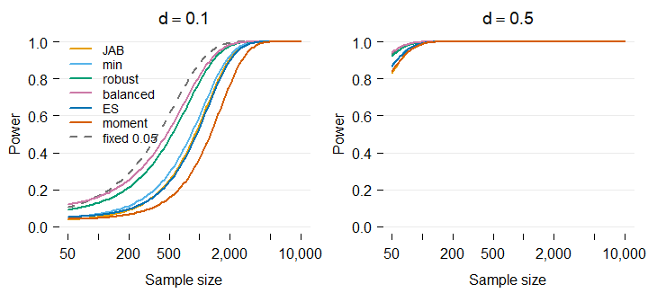
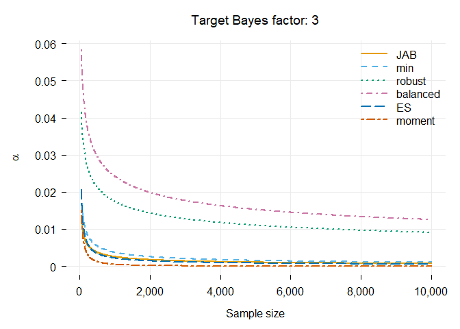
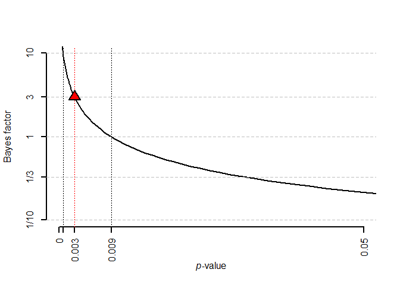

The goal of alphaN is to help the user set their significance level as a function of the sample size. The function alphaN allows users to set the significance level as function of the sample size based on the evidence and the prior features they desire. The function JABt and JABp converts test statistics and -values into sample size dependent Bayes factors. JAB_plot plots the Bayes factor as a function of the -value, and alphaN_plot plots the alpha level as a function of sample size for a given Bayes factor.
Calculations are based on Wulff & Taylor (2024). If you enjoy the package, please consider citing the paper (see citation("alphaN")).
As of version 0.2.0, alphaN() can also calibrate the alpha level to the effect-size and moment Bayes factors of Klauer, Meyer-Grant & Kellen (2025), which center the alternative hypothesis on an effect size of your choosing (method = "ES" and method = "moment").
The development version (0.3.0, GitHub install below) additionally covers joint F tests of several coefficients, converts reported statistics into the Klauer Bayes factors (klauerBF()), computes the power of the calibrated test (alphaN_power(), alphaN_power_plot()), and writes a preregistration-ready settings report (alphaN_report()); the examples below walk through all of it.
If you’re not an R user, you may also be interested in the associated Shiny app.
Installation
To install the latest release version from CRAN use:
install.packages("alphaN")You can install the development version of alphaN from GitHub with:
# install.packages("devtools")
devtools::install_github("jespernwulff/alphaN")Examples
Here is an example: We are planning to run a linear regression model with 1000 observations. We thus set n = 1000. The default BF is 1 meaning that we want to avoid Lindley’s paradox, i.e., we just want the null and the alternative to be at least equally likely when we reject the null.
Therefore, to obtain evidence of at least 1, we should set our alpha to 0.0086.
Targeting stronger evidence, and choosing the prior
Raising BF asks for more evidence before you are allowed to reject, which lowers alpha. The method argument selects the prior behind Jeffreys’ approximate Bayes factor:
Calibrating alpha to effect-size and moment Bayes factors
The methods "ES" and "moment" (new in 0.2.0) answer the question: which alpha do I need so that a significant result corresponds to a Bayes factor of at least BF against an alternative centered on the effect size de I actually care about?
# Moderate evidence, targeting a medium-sized effect (Cohen's d = 0.5)
alphaN(1000, BF = 3, method = "ES", de = 0.5)
#> [1] 0.002189564
alphaN(1000, BF = 3, method = "moment", de = 0.5)
#> [1] 0.0004913521Because the moment prior treats effects near zero as a priori implausible, the alpha it implies falls much faster with the sample size than under JAB:
ns <- c(100, 1000, 10000)
tab <- rbind(JAB = alphaN(ns, BF = 3),
ES = alphaN(ns, BF = 3, method = "ES"),
moment = alphaN(ns, BF = 3, method = "moment"))
colnames(tab) <- paste0("n = ", ns)
round(tab, 5)
#> n = 100 n = 1000 n = 10000
#> JAB 0.00910 0.00255 0.00073
#> ES 0.01185 0.00219 0.00058
#> moment 0.00788 0.00049 0.00002Turning regression output into Bayes factors
JAB() computes Jeffreys’ approximate Bayes factor for a coefficient directly from a fitted lm() or glm() object; JABt() and JABp() do the same from a t-statistic or a p-value if that is all you have (e.g., from a published paper):
set.seed(1)
d <- data.frame(x = rnorm(200), z = rnorm(200))
d$y <- 0.2 * d$x + rnorm(200)
m <- lm(y ~ x + z, data = d)
JAB(m, covariate = "x")
#> [1] 22.50664
# From summary statistics alone
JABt(n = 200, t = 2.8)
#> [1] 3.56385
JABp(n = 200, p = 0.005)
#> [1] 3.634824The sections from here on showcase the development version (GitHub install above); these features ship to CRAN as version 0.3.0.
Called without a covariate, JAB() now audits the whole model at once, returning the Bayes factor of every coefficient except the intercept:
JAB(m)
#> x z
#> 22.50663920 0.07515544Klauer Bayes factors, joint tests, and clustered data
klauerBF() returns the effect-size or moment Bayes factor itself, so a reported statistic can be converted into evidence under the same prior that set alpha. For joint F tests, alphaN() and klauerBF() take q (coefficients tested) and p (retained parameters) and use the exact regression-case Bayes factors of Klauer et al. (2025). And n_effective() implements the Wulff & Taylor (2024) effective-sample-size check for clustered data:
klauerBF(n = 80, t = 2.24, de = 0.5)
#> [1] 1.567758
alphaN(200, BF = 3, method = "ES", q = 2, p = 2, de = sqrt(0.15))
#> [1] 0.008427417
n_effective(n = 237, se = 0.1, se_robust = 0.2)
#> [1] 59.25Power at the calibrated alpha
A calibrated alpha is still a significance level, and at design time it should be paired with a power assessment. alphaN_power() returns the power of the calibrated coefficient test against a standardized effect of size d, and alphaN_power_plot() draws the whole picture: power across sample sizes, with every method evaluated at its own calibrated alpha and a fixed 0.05 reference as the dashed curve.
# Power against a small effect at n = 1000, evidence target BF = 3
alphaN_power(n = 1000, d = 0.1, BF = 3) # JAB
#> [1] 0.5547323
alphaN_power(n = 1000, d = 0.1, BF = 3, method = "balanced") # balanced
#> [1] 0.817175
alphaN_power_plot(d = c(0.1, 0.5), BF = 3,
methods = c("JAB", "min", "robust", "balanced",
"ES", "moment"))
For effects stated on a model-specific scale (an odds ratio in a logistic regression, say), the calibrated alpha plugs directly into the power calculators of the pwrss package, e.g. pwrss::power.z.logistic(..., alpha = alphaN(n, BF = 3)).
A preregistration-ready settings report
alphaN_report() records every input behind a calibrated alpha, the resulting level, the decision rule, the power against the effects you care about, and the references to cite, ready to attach to a preregistration protocol:
alphaN_report(n = 1000, BF = 3, method = "ES", de = 0.5, p = 4,
power_at = c(0.1, 0.5))
#> # alphaN settings report
#>
#> Generated on 2026-07-23 with alphaN 0.2.0.9000.
#>
#> ## Inputs
#>
#> - Sample size (n): 1,000
#> - Target Bayes factor: 3 (moderate evidence)
#> - Calibration method: ES: effect-size Bayes factor of Klauer,
#> Meyer-Grant & Kellen (2025)
#> - Targeted effect size (de): 0.5 (Cohen's d)
#> - Prior degrees of freedom (nu): 3
#> - Prior scale (r): 0.2887
#> - Retained model parameters (p): 4 (effective sample size 996)
#> - Scope: exact for the normal linear model (evaluated at the effective
#> sample size n - p); asymptotic for other generalized linear models.
#>
#> ## Result
#>
#> - Calibrated alpha level: 0.0022
#> - Decision rule: Reject H0 if the two-sided p-value of the coefficient
#> is at or below 0.0022.
#> - Interpretation: a significant result then corresponds to a Bayes
#> factor of at least 3 in favor of the alternative under this prior.
#>
#> ## Power at the calibrated alpha
#>
#> - Against a standardized effect of 0.1: 0.53
#> - Against a standardized effect of 0.5: 1.00
#>
#> ## Please cite
#>
#> - Wulff, J. N., & Taylor, L. (2024). How and why alpha should depend on
#> sample size: A Bayesian-frequentist compromise for significance
#> testing. Strategic Organization, 22(3), 550-581.
#> doi:10.1177/14761270231214429
#> - Klauer, K. C., Meyer-Grant, C. G., & Kellen, D. (2025). On Bayes
#> factors for hypothesis tests. Psychonomic Bulletin & Review, 32,
#> 1070-1094. doi:10.3758/s13423-024-02612-2Visualizing the trade-offs
alphaN_plot() compares alpha as a function of sample size across any selection of the calibration methods (the four prior fractions by default):
alphaN_plot(BF = 3,
methods = c("JAB", "min", "robust", "balanced", "ES", "moment"))
JAB_plot() shows how the Bayes factor maps onto the p-value for a given sample size, marking the alpha levels needed for evidence thresholds of 1, 3, and 10:
JAB_plot(n = 1000, BF = 3)